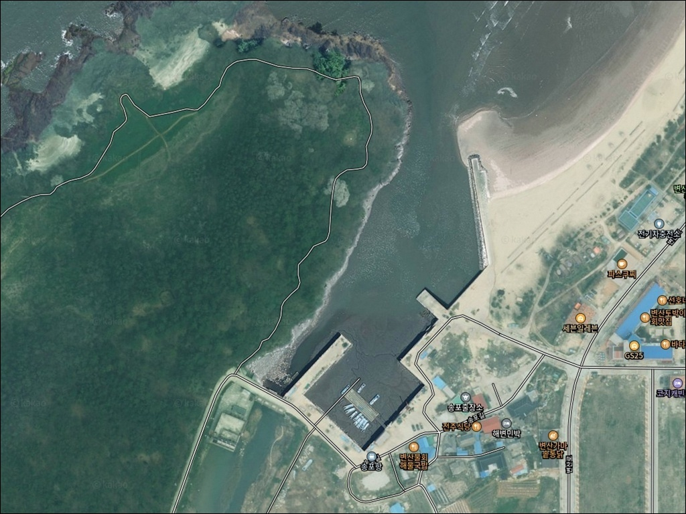
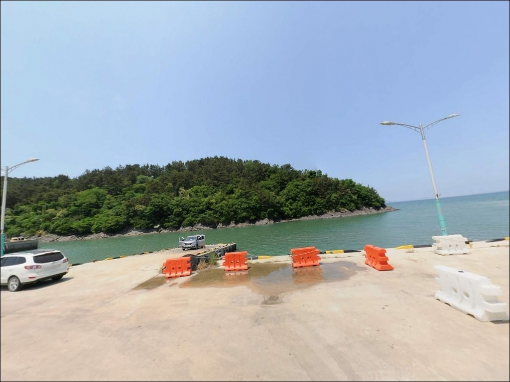
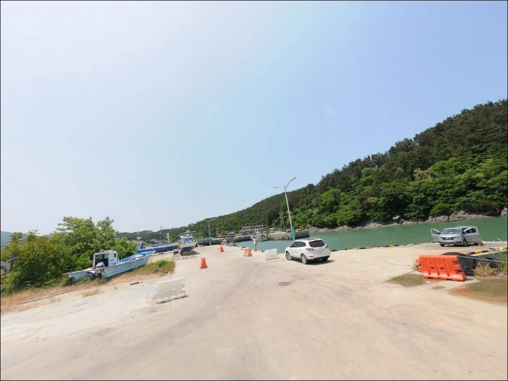
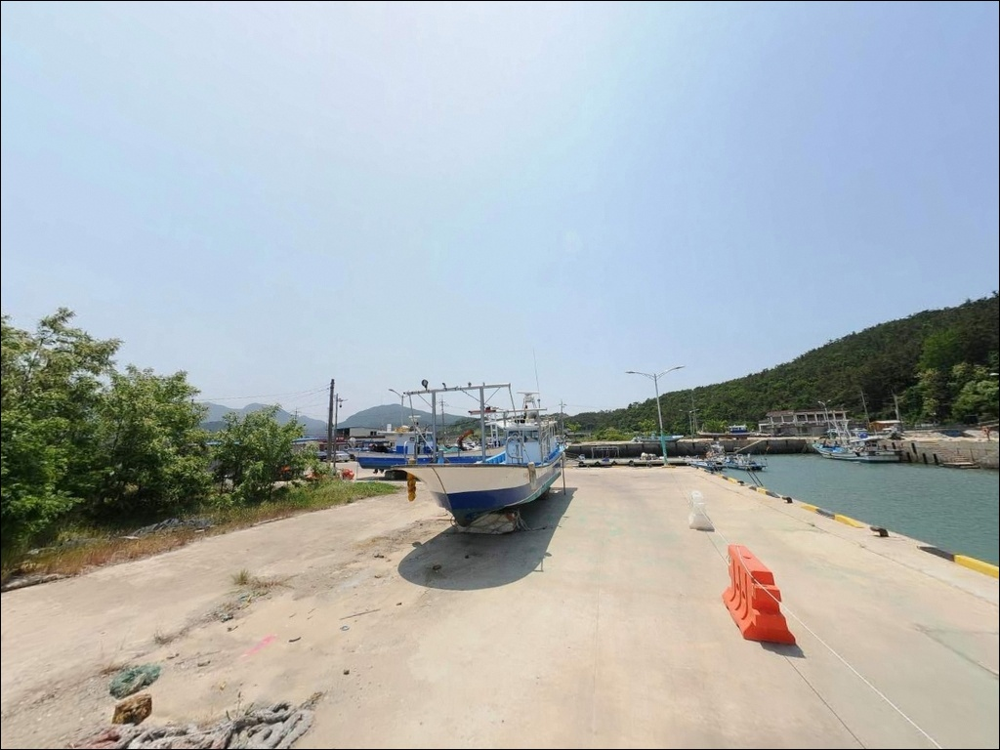
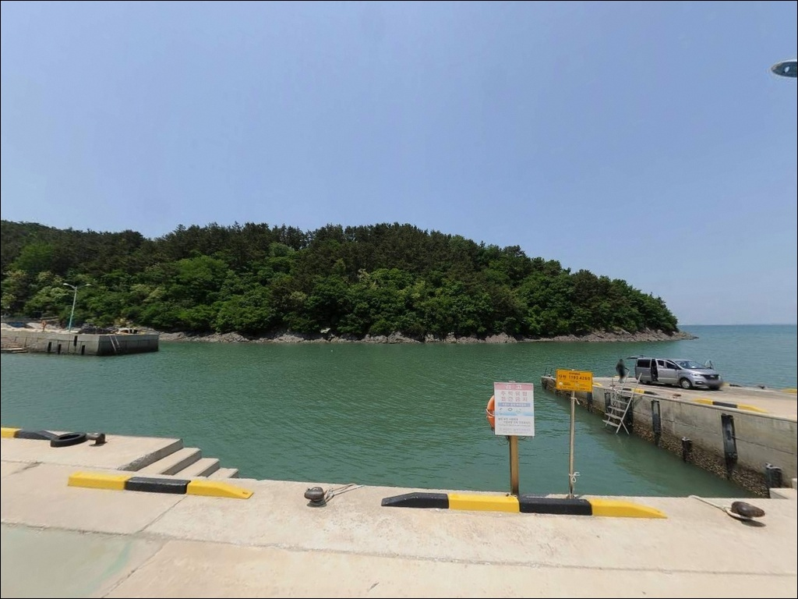
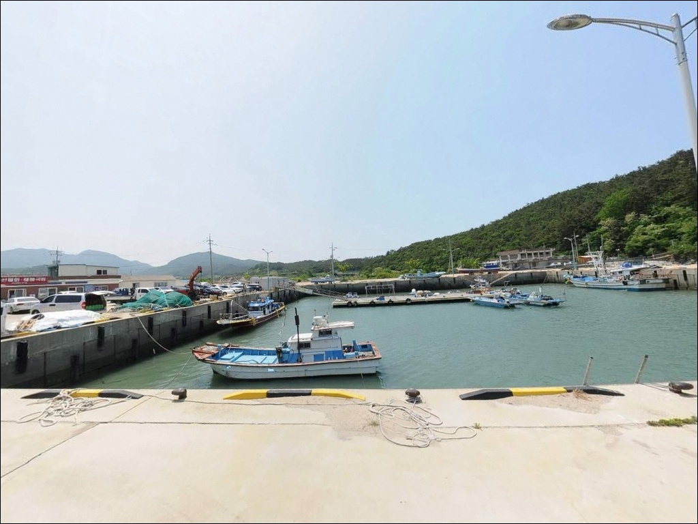
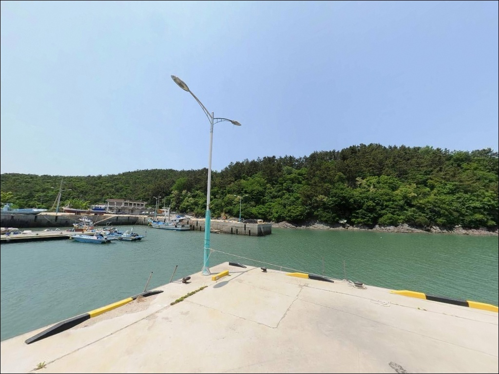
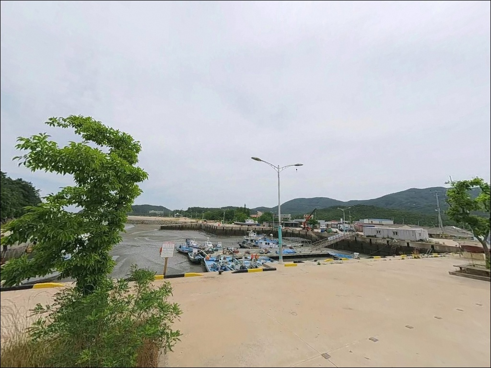
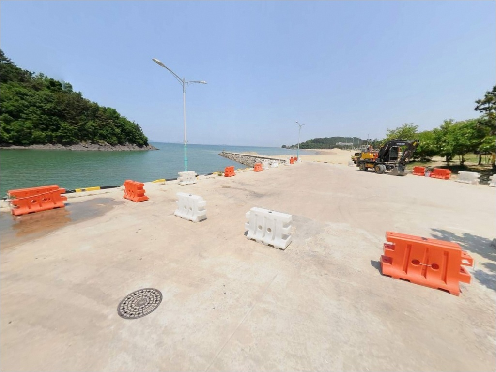

송포항, 전북 부안군 노을빛이 스며드는 차박, 낚시 겸용 감성 장소
이 페이지에는 광고(제휴 링크 포함)가 있으며, 광고 링크를 통해 구매하면 운영자가 판매 수익 또는 수수료를 받을 수 있습니다. 포인트 사진: 카카오맵 스카이뷰·로드뷰. 이 페이지의 지도·사진 이미지는 카카오맵의 실제 서비스 이미지와 다를 수 있습니다.


포인트 안내
송포항
전북 부안군 변산면 대항리 572-1
송포항 갯바위에서 가장 많이 일어나는 실수는
물때를 확인하지 않고 진입하는 것입니다.
서해 변산 일대는 대조 시 수위 차가 6m를 넘는 지역으로,
만조 시 갯바위 일부가 물에 잠겨
고립으로 이어진 사고가 실제로 발생한 곳입니다.
이 글은 송포항의 지형 구조, 진입 여건,
낚시 방식 적합성을 중심으로 정리했습니다.
변산해수욕장 남단에 바로 인접한 송포항은
2007년 지방어항으로 지정된 소규모 어항입니다.
방파제 85m와 물양장 319m를 갖추고 있으며,
어촌뉴딜 300 사업을 통해 안전시설과 부잔교가 정비된 곳입니다.
변산마실길 2코스 기점과 맞닿아 있어
낚시꾼과 도보 여행객이 함께 찾는 포인트입니다.
조황 정보나 특정 어종 보장은 이 글의 범위에 포함되지 않습니다.
지형 구조, 진입 여건, 낚시 방식 조건에 집중합니다.

1. 진입 동선과 주차 여건
변산해수욕장 진입 도로에서 연결되는
포장된 도로를 통해 접근하는 구조입니다.
급경사 없이 진입이 가능한 편이며,
소형~중형 차량 기준으로는 진입에 큰 어려움이 없습니다.
다만 소규모 어항 특성상 항 내부 공간이 넓지 않으므로,
대형 SUV나 캠핑 장비를 갖춘 차량은
출발 전 위성지도로 진입로를 먼저 살펴두는 편이 좋습니다.
주차는 선착장 인근 공터, 방파제 입구 부근 도로변,
마을 입구 일부 공간을 활용하는 방식이 일반적입니다.
어민 어선의 이동 동선을 막지 않는 자리를 먼저 확인하는 것이 기본입니다.
변산마실길 탐방객이 유입되는 시간대에는
주차 공간 경쟁이 생기는 편이라,
성수기라면 도착 시각을 조정하는 편이 낫습니다.
회차 공간은 어항 내부에 어선 작업 공간이 있어
비교적 가능한 편이지만,
어업 작업이 이루어지는 시간대에는 공간이 좁아질 수 있습니다.
현장 상황에 따라 탄력적으로 판단해야 합니다.

2. 차박 환경과 야간 체류 여건
선착장 인근 공터와 방파제 입구 공간은
차량 체류가 가능한 구조이나,
변산반도 국립공원 외변산 지역(대항리) 안에 위치하므로
야영·취사 허용 여부를 방문 전 반드시 확인해야 합니다.
국립공원 구역 내에서는 지정된 장소 외
야영·취사가 원칙적으로 허용되지 않습니다.
야간에는 민가 밀집도가 낮아 조용한 편입니다.
다만 변산해수욕장과 인접한 성수기에는
유동 인구가 발생하는 편이라 프라이버시는 제한적입니다.
갯바위 구간은 가로등이 없어 어두운 편이므로
개인 헤드랜턴은 반드시 준비해야 합니다.
외항 쪽은 기상에 따라 바람과 파도 영향을 받으므로
차박을 겸한 야간 낚시라면 기상 예보를 당일 재확인하는 것이 기본입니다.


3. 주변 편의시설 및 인프라 현황
변산해수욕장 상권이 약 500m~1km 거리 안에 있어,
이 권역에서는 편의시설 접근성이 비교적 양호한 편입니다.
바지락죽·백합죽 전문점을 포함한 식당이
해수욕장 인근에 다수 분포하고 있어
낚시 후 식사 동선을 잡기 좋습니다.
변산면 소재지 방향으로 이동하면
마트와 주유소도 이용할 수 있습니다.
낚시 소품이나 채비를 보충하려면
격포항 방향으로 이동하는 것이 현실적입니다.
격포항 일대에 낚시점과 식당이 집중되어 있어
출조 전 보급 동선으로 활용하기 좋습니다.
응급 상황 시에는 부안읍 방향으로 이동해야 하므로,
장거리 출조라면 비상약품과 수분은 출발 전에 챙겨야 합니다.
항 내에는 정자 2개소가 설치되어 있어
낚시 대기나 휴식 공간으로 활용할 수 있습니다.

4. 갯바위 진입 전 물때를 반드시 확인해야 하는 이유
송포항 방문 전 가장 먼저 확인할 것은 물때입니다.
서해 변산 일대는 대조 시 수위 차가 6m를 넘는 지역으로,
간조와 만조 사이에 노출되는 갯바위 구간이 크게 달라집니다.
만조 시 진입했다가 물이 차오르면 고립되는 구조인 만큼,
갯바위 쪽으로 이동할 계획이라면
바다타임에서 당일 물때를 반드시 확인하고 입장해야 합니다.
서해 간조·만조 수위 차가 큰 포인트에서는
물때 확인이 낚시 진입의 전제 조건입니다.
채비는 암초 지대 특성상 밑걸림 손실이 잦은 편이므로
여분을 넉넉히 준비하는 것이 기본입니다.
사석경사제로 이루어진 방파제는 미끄러운 편이므로
미끄럼 방지 신발과 구명조끼는 필수입니다.
어선 이동이 있는 어항 특성상
물양장 계류선 주변과 선박 통로는 피해야 합니다.
야간 낚시를 계획한다면
방파제 끝단 조명이 충분하지 않으므로
헤드랜턴과 보조등을 반드시 지참해야 합니다.
기상 예보에서 풍랑·강풍 경보가 있다면
출조를 피하는 것이 기본 원칙입니다.

5. 지형 기반 낚시 여건 분석
송포항은 변산해수욕장 남단 움푹 들어간 지형에
자리 잡은 내만 성격의 소형 어항입니다.
방파제 85m는 규모가 작은 편이지만,
외항 방향으로 뻗어나간 구조라
방파제 끝단과 꺾이는 구간이 핵심 포인트입니다.
내항은 물양장 319m를 갖추고 있으며,
잔잔한 수면으로 찌낚시 여건이 형성되어 있습니다.
수심은 서해 특성상 간조·만조에 따라 폭이 크게 달라집니다.
방파제 끝단 기준 만조 시에는 원투와 에깅이 운용 가능한
수심이 확보되며,
간조 시에는 내항 쪽이 크게 얕아지는 편입니다.
외항 방향으로 캐스팅할 때가 수심 확보 측면에서 유리합니다.
방파제와 인접한 갯바위 구간에는 암반 지대가 발달해 있어
어류 은신처와 먹이 활동 구간이 자연스럽게 갖춰져 있습니다.
다만 암초 지형 특성상 밑걸림이 심한 구간이 있어,
채비를 멀리 보내거나 수중 지형을 탐색하며 운용하는 방식이 어울립니다.
방파제 끝단 외항 쪽은 조류 흐름이 살아 있어
루어와 원투낚시 모두 운용 가능한 구간입니다.
변산 일대 최신 조황은 가기 전에 꼭 검색해 보시기 바랍니다.


6. 포인트에 어울리는 낚시 스타일
원투낚시는 이 포인트 지형에 잘 맞는 스타일입니다.
방파제 끝단 외항 쪽이나 갯바위 인접 구간에서
바닥층을 향해 멀리 던지는 방식이 기본 운용입니다.
조류가 흐르는 들물·날물 전환 전후로
입질이 살아나는 경향이 있어,
물때 흐름에 맞춰 자리를 잡는 것이 중요합니다.
찌낚시는 내항 물양장 가장자리에서 운용하기 적합한 스타일입니다.
잔잔한 내항 수면은 찌 흐름을 읽기 좋은 여건을 만들어 줍니다.
숭어·학공치 계열이 내항으로 들어오는 경우가 있어,
조류 흐름이 부드러워지는 정조 전후가 관찰 타이밍입니다.
루어 라이트게임도 이 포인트 구조에 어울립니다.
방파제 끝단이나 갯바위 석축 가장자리에서
짧은 캐스팅으로 우럭·노래미 계열을 노리는 방식입니다.
야간에 헤드랜턴을 갖추고
암초 경계선을 천천히 탐색하는 방식이 잘 맞습니다.
에깅은 시즌성이 강한 스타일입니다.
외항 수심이 확보되는 만조 타이밍에 집중하고,
가을철 갑오징어·주꾸미 시즌에 공략하는 것이
이 포인트 지형 구조와 잘 맞는 방식입니다.

7. 대안 포인트와 플랜 B 동선
송포항에서 여건이 여의치 않다면
격포항이 첫 번째 대안입니다.
북방파제 610m, 남방파제 380m 규모로
낚시 자리와 포인트 선택 폭이 넓고,
낚시점·식당 등 인프라가 집중된 국가어항입니다.
송포항 기준으로 도로로 약 9~10km 거리입니다.
모항방파제와 궁항방파제도 변산 해안선을 따라
이동하기 좋은 대안 포인트입니다.
각 포인트별로 방파제 구조와 수심 조건이 달라
조류 상황에 따라 옮겨 다니는 방식이 효율적입니다.
변산 해안라인 전체를 하나의 출조 권역으로 보고
동선을 계획하는 것이 이 권역 특성에 맞는 방식입니다.
차박 체류 공간을 더 넓게 확보하고 싶다면
변산해수욕장 공영주차장 방향이 대안입니다.
주차 여건과 접근성이 안정적이며,
송포항과 이동 거리가 짧아
병행 출조 동선으로도 활용하기 좋습니다.

물때를 알고 들어가면,
송포항은 조용하고 집중하기 좋은 포인트입니다
방파제 원투나 갯바위 루어를 즐기는 낚시인이라면
송포항 구조는 잘 맞는 편입니다.
규모가 크진 않지만 그만큼 집중 공략이 가능하고,
변산해수욕장 인근이라 편의시설 접근도 나쁘지 않습니다.
대형 포인트를 원한다면 격포항과 묶어
변산 해안라인 전체를 하나의 출조 권역으로
활용하는 방식을 권합니다.
반면 물때 계산 없이 갯바위로 들어가거나,
국립공원 구역 야영·취사 허용 여부를 확인하지 않으면
현장에서 난감한 상황을 맞닥뜨릴 수 있습니다.
물때 확인, 국립공원 사전 문의, 미끄럼 방지 장비,
이 세 가지를 갖추고 간다면
변산 해안에서 조용하게 집중할 수 있는
포인트가 될 수 있는 곳입니다.
낚시를 마친 후 해수욕장 인근에서 저녁을 해결하고
선착장 공터에서 하룻밤 머무는 차박을 더한다면,
변산반도의 조용한 어항 하나를 온전히 즐기는
출조가 될 수 있습니다.